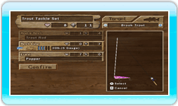

- Cambiare l'Attrezzatura
Apri il Menù di Pesca premendo il Pulsante - e scegli "Cambia Attrezzatura".
Scegli un Pesce da Pescare: Cambia il tuo Pesce da Pescare Premendo il Pulsante + o il Pulsante -. I pesci che non hai ancora sbloccato non appariranno.
Seleziona lo Spessore della tua Lenza:
Evidenzia "Lenza", quindi premi Sinistra o Destra sulla Pulsantiera + o sul Control Stick per cambiare lo spessore della lenza. Lenze più spesse durano di più, ma attraggono meno i pesci. Lenze sottili sono molto attraenti, ma si possono rompere facilmente. Cerca di trovare il giusto mezzo!
Selezione un'Esca: Evidenzia "Esca" premendo in su o in giù sulla Pulsantiera + o sul Control Stick e premi il Pulsante A.
Profondità dell'Esca: Le esche sono organizzate a seconda della profondità.
- Superficie: Galleggia a pelo d'acqua
- Basso: Galleggia appena al di sotto della superficie
- Medio: Si posiziona a mezza profondità
- Profondo: Si posiziona
- Fondo: Affonda fino in fondo
Evidenzia la profondità scelta premendo a sinistra o destra sulla Pulsantiera + o sul Control Stick, quindi premi il Pulsante A per selezionarla.
Una volta che avrai scelto una profondità, scegli quale esca adatta a quella profondità vuoi usare. In generale, è meglio scegliere l'esca con il più alto valore di attrattiva per il pesce che vuoi pescare.
|
|
|